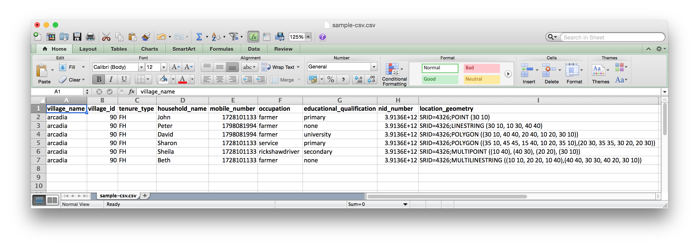
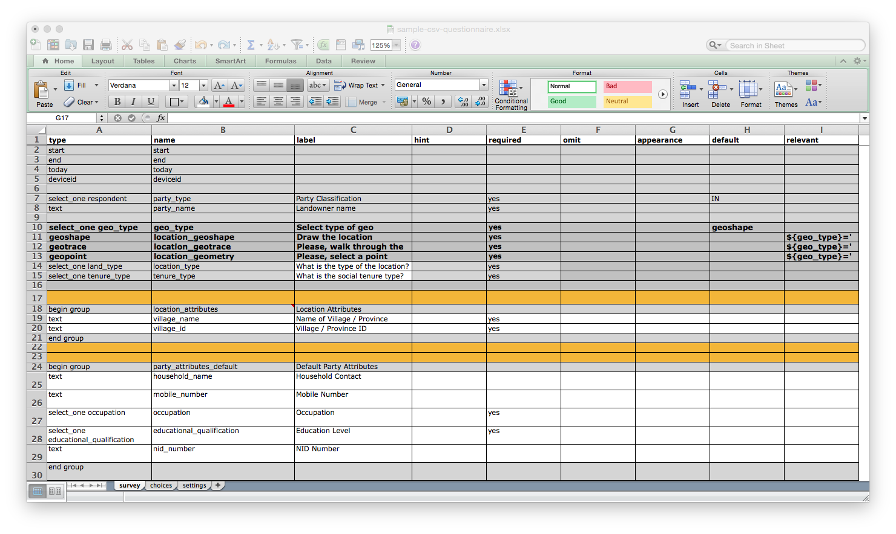
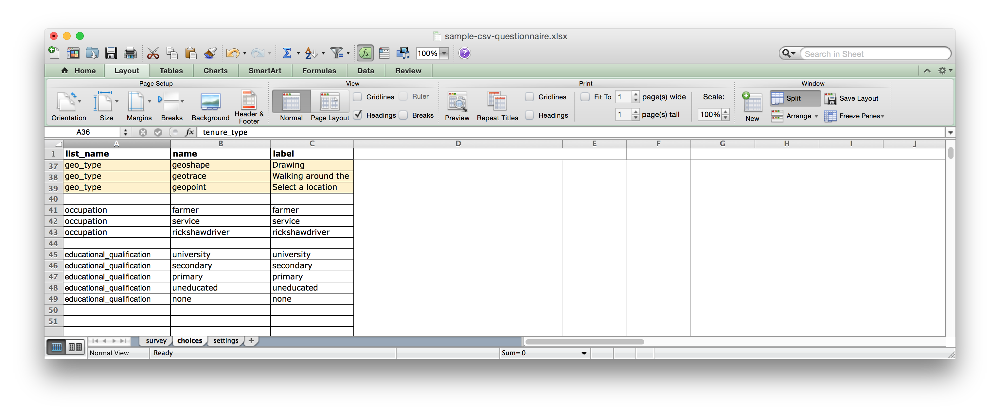
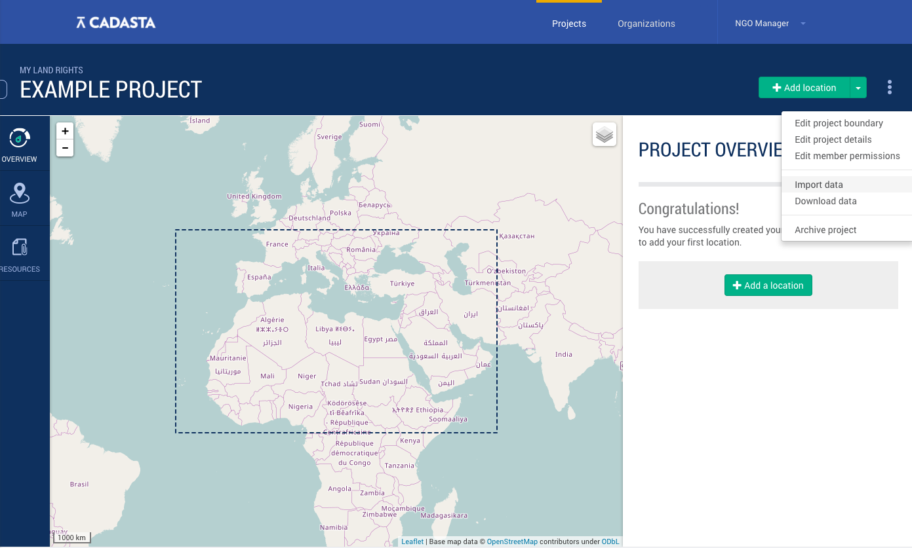
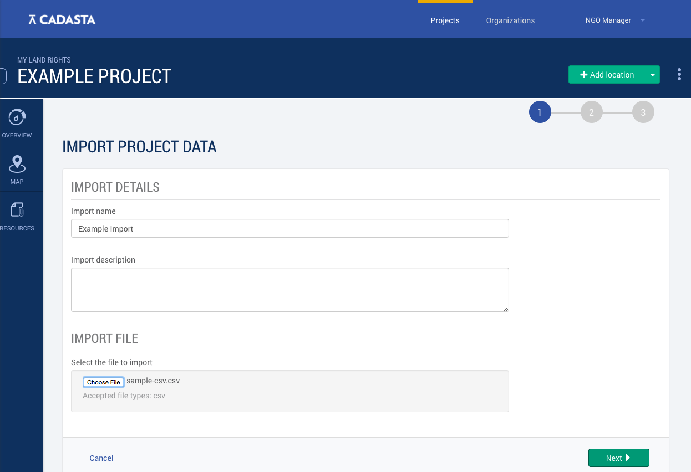
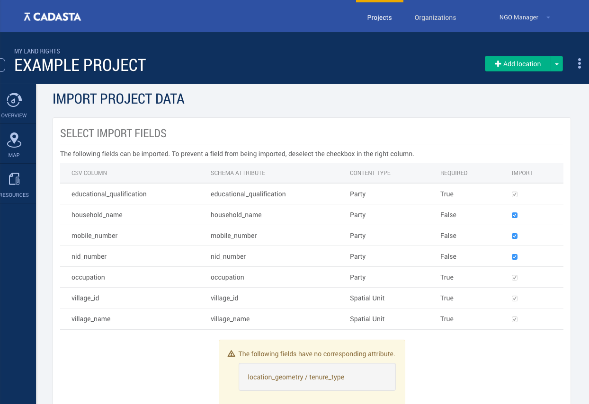
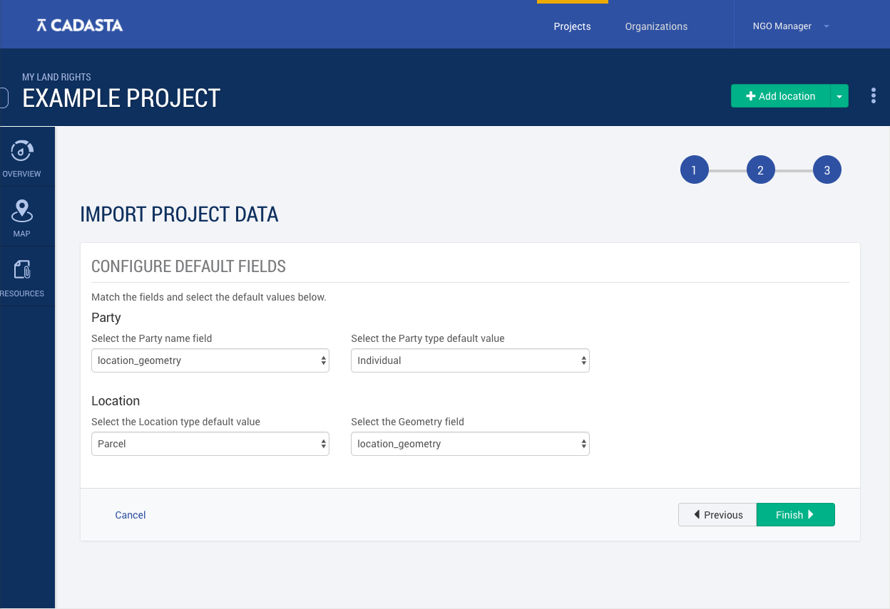
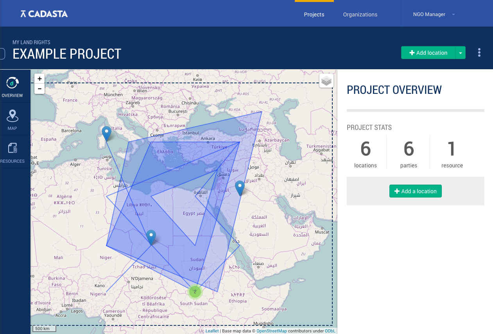

Importing Data
Overview
If you've already been collecting data in another system and are switching to the Cadasta Platform, you can import your data in a .csv. This can be useful if you have many questionnaires to import, whether you have 10 or 10,000.
Data importing is also a relatively new feature. We recommend that you reach out to us so that we can help you through the process.
Setting Up
Before importing your data, you'll want to make sure that the structure of your dataset matches the structure of the questionnaire that you're using for your project.
In this example, you can see a .csv of responses:

Which works with this questionnaire:

Here you can see that:
each header in the data corresponds with a
namein the questionnaire.all of the required fields – all marked in gray - are preserved, even if there is no corresponding data or fields in the .csv.
If you look at the choices tab of the questionnaire, you can also see that the options in the name column match entries in the .csv. Note that these options need to match exactly in both spelling and format.

If you have questions about whether your questionnaire matches your data set, need to create a questionnaire to match your data set, or are having trouble importing data from your .csv, please don't hesitate to reach out to us for assistance.
Importing Data
To import your data, navigate to the main project page. There, select the three dots on the upper right, and then Import Data.

Next, you'll come to a page where you can give the file a name and select your .csv for uploading.

On the page that follows, you'll be asked to select your input fields.

Note that grayed-out checkboxes indicate required questions in your questionnaire (i.e. questions marked yes in the required column). They must be included with the file upload.
At the bottom of this page, you may see some notes like The following fields have no corresponding attribute. These messages indicate required fields in the questionnaire that do not have corresponding fields in the data.
On the next page, you'll need to configure a couple types of fields.

One type is for selecting the type of default party name and party type (individual, group, or corporation). The other is for selecting the type of location and geometry field. These simply create default inputs for required fields not shown in the .csv.
_Please note that this section will likely change as of December 2016. In the meantime, please reach out to us if you have any questions.
When you're done, select Import Data from the bottom right. Note that this might take a few moments. If the upload takes more than a minute, then you'll likely get a timeout message and need to try again. If the problem persists, try splitting your .csv into two smaller files and uploading them one at a time.
If the upload is completed successfully, you'll be able to see all of the records you've imported from the project location overview page.
